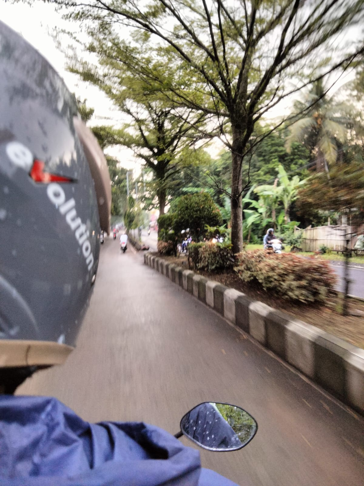
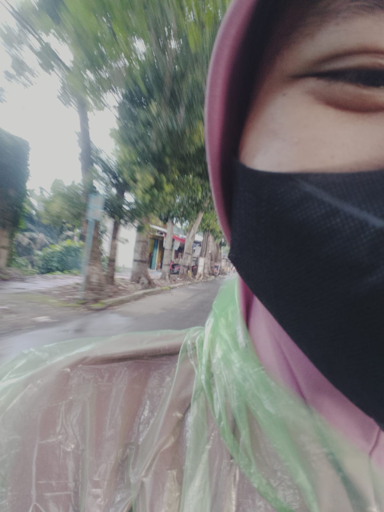
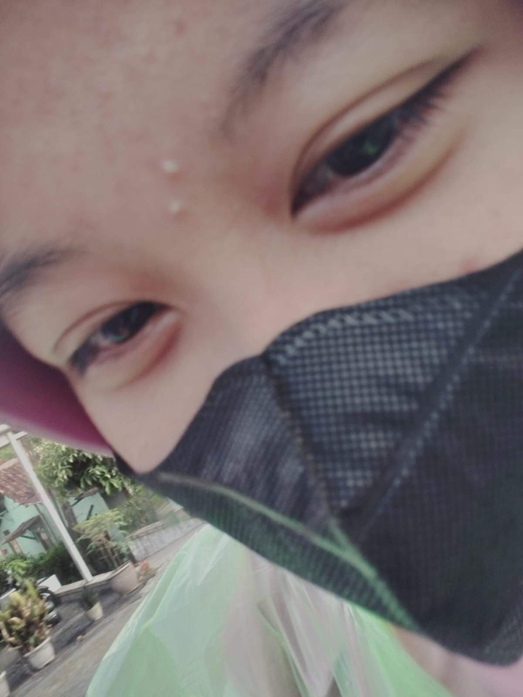
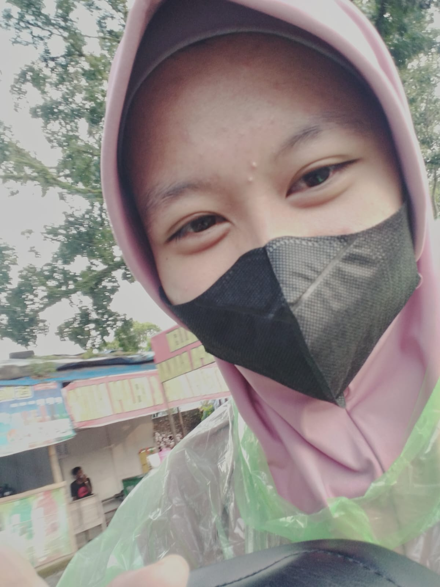
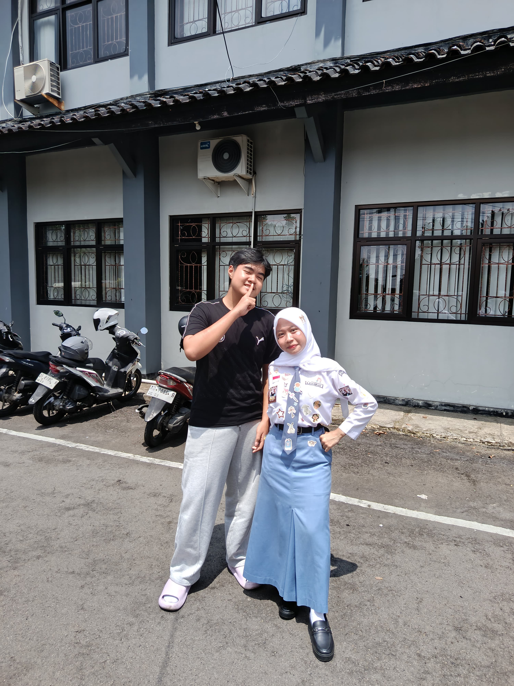
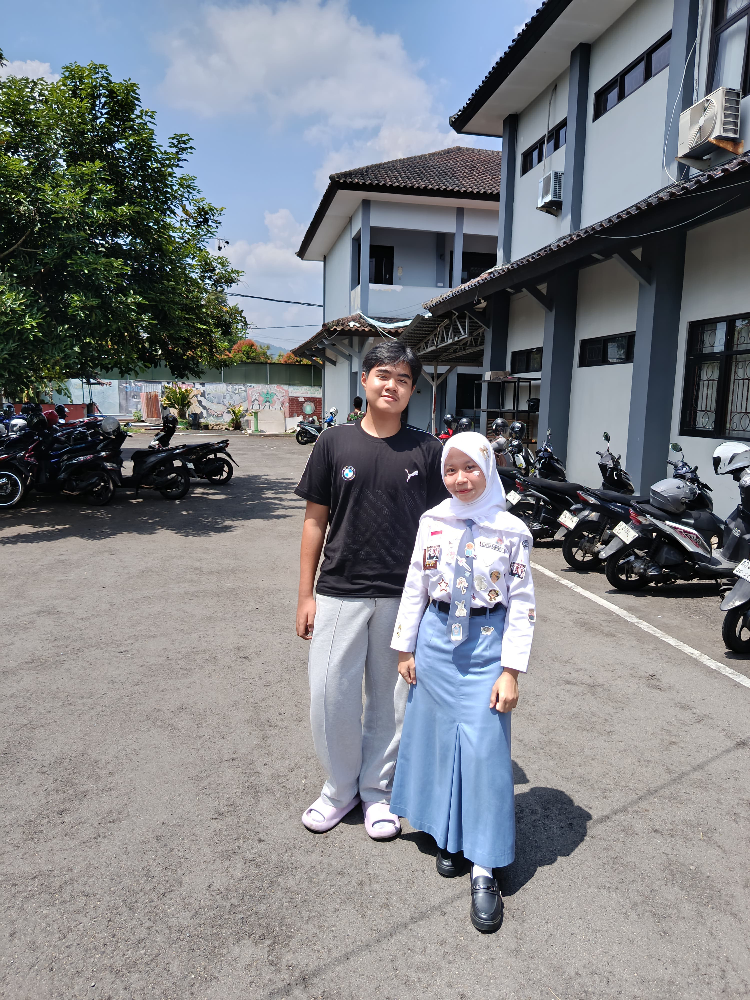
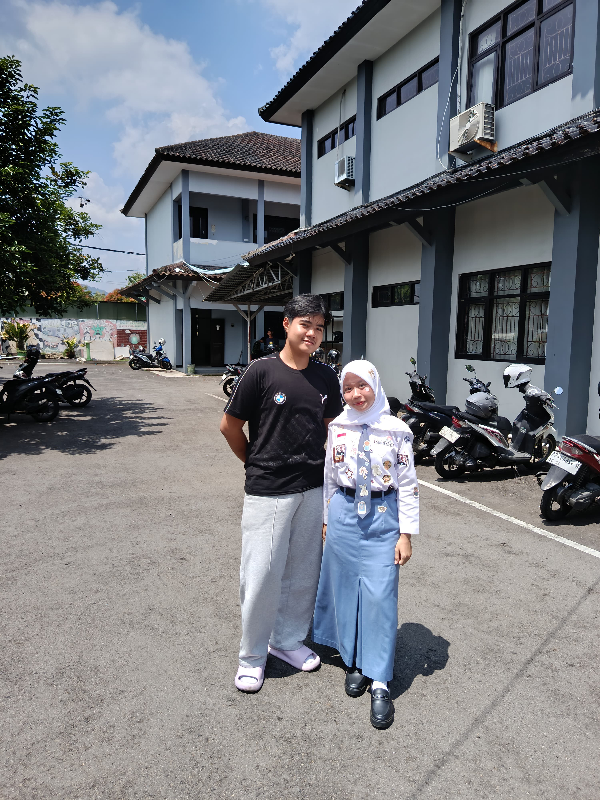
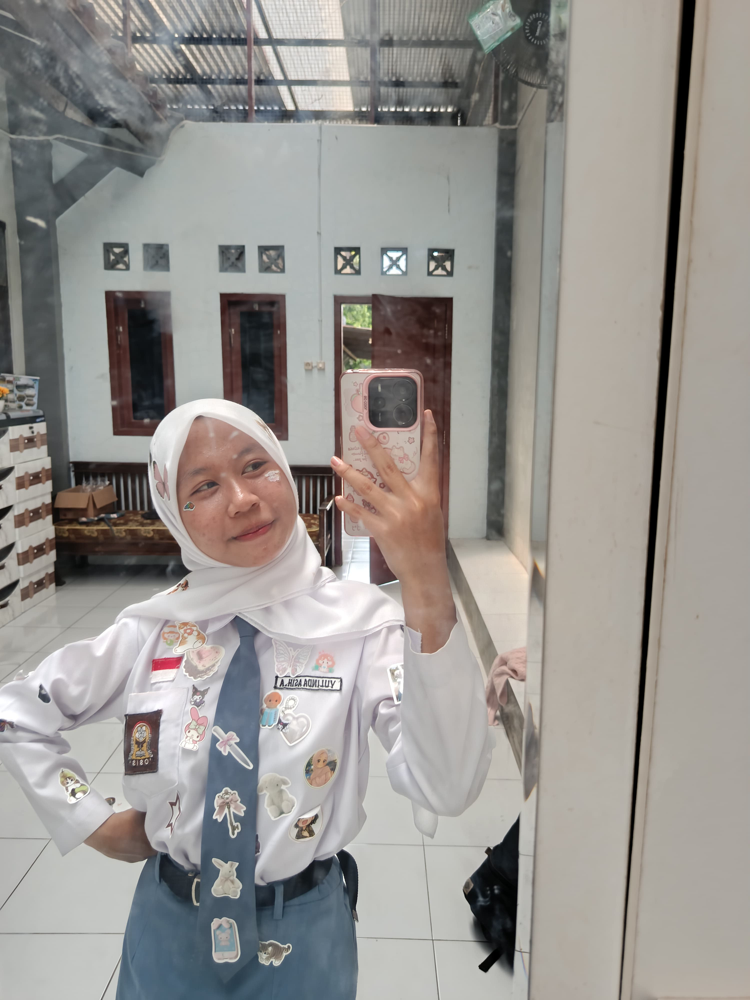
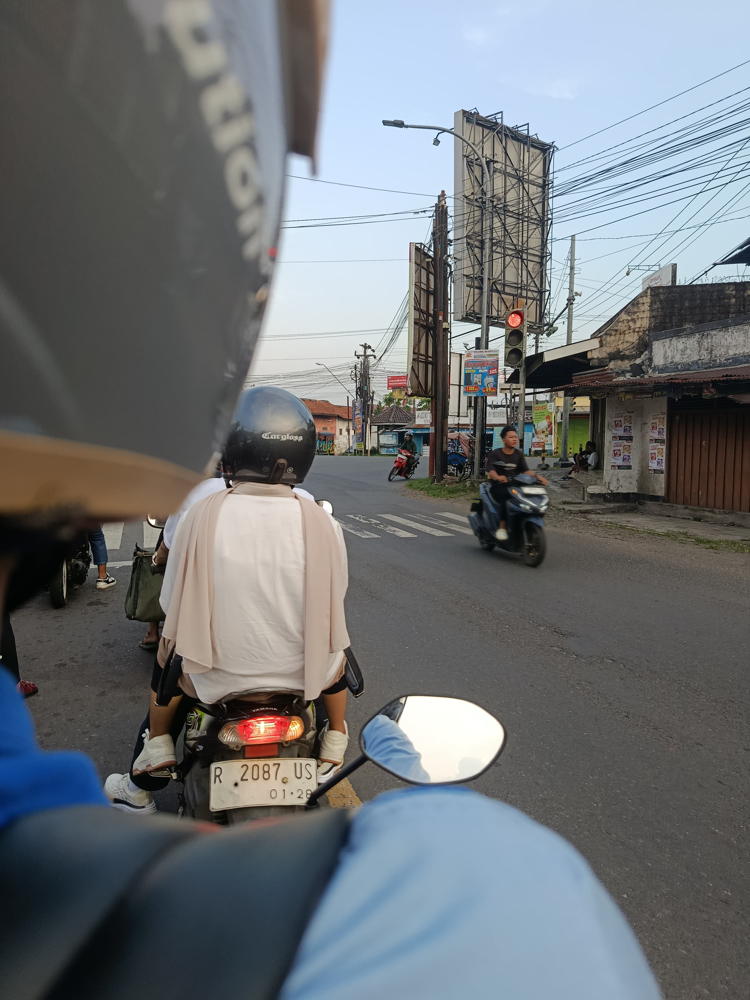
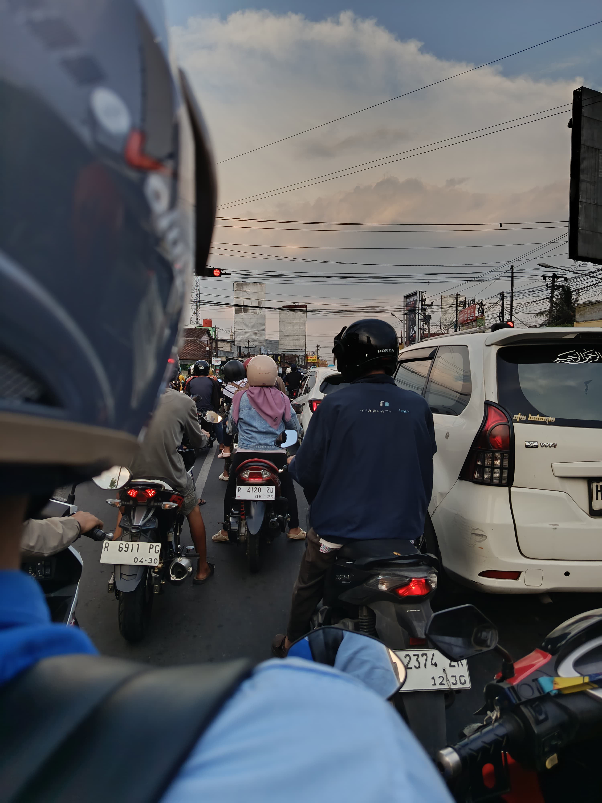

Cerita Seru Kita Berdua
dari ga kenal sama sekali sampai sekarang aku akan abadikan dan akan aku jelaskann :b
aku bersyukur bgt punyaa kakaa yang bisa di ajak cerita, bercanda dan juga sefrekuensi dan juga sangat penyanyang— Dari adikmu yang paling imut
Momen yang Tak Terlupakan
Setiap foto menyimpan cerita yang tak terucapkan




.jpg)
.jpg)
Mau sejauh apapun, mau sesibuk apapun, kaka adalah orang pertama yang bisa bikin aku sehappy, secair, seterbuka ini dan yang pasti kaka adalah orang pertama yang ku anggap sebagai kaka ku sendiri, tidak lupa kakaa adalah rumah bagi adik 1 ini cerita dan berkeluh kesah- adik nyaa kakaa linda -
Perjalanan Kita Bersama
perjalanan bagaimana semua ini bisa terjadi
festifal agustusan di bms
20 agustus 2025 adlah waktu kali pertama kita chatan dan langsung membahas hal berat yaitu masa laluu kakaa linda, katanya kaka muka ku dan muka hts di masa smp nya itu mirip dan bikin kalin makin gamon setelah 3 taun gamon lalu liat aku muka nya yang mirip. dia melihat aku saat aku sedang bertugas menjadi paskibra pada festival agustusan dan pada saat selesai dia ngechat aku lalu kita saling sharing cerita walau kita baru kenal tapi kita kalau ngobrol katanya nyambung bgt dan sefrekuensi pada saat itu lah awal kita saling mengenal
saat pindah jam mapel kelas
aku masih ingat di saat aku pindah kelas karna jam mapel habis aku pindah dari kelas b1.1 ke lab apk aku jalan bersama teman ku pada saat aku melewati depan kantor gunu NA aku berpapasan langsung dengan kalin disitu entah kenapa aku bisa senyum dan ketawa bercanda perkara melihat muka dia yang kocak dan ternyata dia juga ketawa dan pada saat itu kami mulai bercanda
rumah
setelah lama nya kita komunikasi entah itu cerita, kegiatan, keluh kesah aku merasa nyaman dengan kalin bukan karna apa apa tapii aku nyaman karena aku sebenarnya orang yang tidak suka komunikasi dengan orang siapapun itu tetapi dengan kalin beda 180 derajat, aku merasa aku bisa jadi diri sendiri tanpa aku pendam apapun karna pada perjalanan itu aku merasa kalin adalah orang yang tepat untuk menjadi kan rumah bagi aku, tempat aku pulang bercerita, berkeluh kesah dan lain lain dan juga kalin tidak ada rasa cape komunikasi sama aku dan pada saat itu aku menggap dia juga kaka ku
semoga kita selamanya
jujur saja setelah hampir 1 tahun genap kita komunikasi banyak hal yang aku ingin ucapkan rasa terima kasih mungkin tidak cukup mungkin dengan aku membuat web ini adalah bentuk terimakasih aku untuk semua hal karena semua hal imut aku kenang di web istimewa ini. terimakasih kaka yulinda asih kaka fav ku kaka yang tak mungin bisa aku lupakan begitu saja banyak sekali aku rasakan saat aku dekat dengan kaka aku yang dulu ga bisa komunikasi sekarang bisa jadi diri sendiri dengan kaka dan juga motor aku jadi saksi bisu atas semua kenangan kita, kita kemarin keliling pwt ke maskemambang muter menara teratai ke UMP, muter muter purbalingga ke owabong hujan hujanan bareng dan yang terakhir adlah moment dimana aku menhadiri acara wisuda kalin trus pergi ke pendopo banyumas untuk mengabadikan moment kala itu. aku berharap kita ga miskom kita ga asing dan saling komunikasi kaya biasa walau nanti nya kita berpisah oleh keadaan tapi walau begitu tolong jangan lupakan aku, kalau kangen liat web ini atau peluk boneka kelinci putih yang ku berikan saat pelepasan jabatan
Koleksi Kenangan Kita
Semakin banyak foto, semakin banyak cerita
.jpg)




.jpg)
tenang, kaka adalah kakel fav ku dan orang pertama yang aku bilang rumah dan menjadi kaka ku sendiri yang tak akan ku lupakannanda
Foto-foto Favorit
Momen paling spesial yang ingin kuingat selamanya


.jpg)
.jpg)


Buat Kaka ku,
untuk kak linda, kakakku yang luar biasa
kak? tak terasa, hampir satu tahun sudah kita berada di
frekuensi yang samaa, rasanyaa eum baru kemarin aku merasa asing di organisasi mpk ini, hingga aku
menemukan
kaka kakaa yang bukan sekadar kakaa kelas, tapi juga rumah berceritaa, bercanda, dan sosok
yang membuat hidup ini terasa lebih hangat bagi aku yang masih merasa sendiri dan tak punya siapa saiapaa
masih terekam jelas di ingatan akuu bagaimana deru mesin motorku menjadi saksi bisu perjalanan kitaa
hihiii kita
membelah jalanan dari purwokerto samaa purbalingga walau ga semua sii dan juga kita mencari taman
yang indahh, akuu ingat bagaimanaa kita tertawa di bawah langit yang sama, membicarakan hal-hal acak entah
itu keluarga kita yang pada nda bener, dan
mengabadikan banyak momen lewat kamera. foto-foto itu mungkin tersimpan di galeri, tetapi memori saat kita
tertawa lepas di motor seperti kalain jadi maps tapi salah muluu akan selamanya terkunci di dalam hatikuu.
momen-momen itu mahal, karena aku
tahu semuanya tidak akan terulang kembali dengan rasa yang sama :3
kemarin, saat melihat kakak berdiri di acara wisuda aku melihat kaka di live youtube di up, ada rasa
bangga yang luar biasa meledak di dadaku,
namun jujur, di balik senyumku saat itu, ada sedikit sesak yang muncul aku menyadari bahwa kakaa, siswa
kelas 12 yang pinter ini kayaknya aamiin, sudah saatnya mengepak sayap untuk terbang lebih tinggi dan jauh
menggapai masa ddepan yang cerah, sementara aku
si anak kelas 10 ini, harus belajar merelakan merelakan moment sangat berharga dan juga mungkin aku akan
jarang mengunjungi taman karna yang mengenal kan taman adlah kalin
dan tidak seru jika dia tidak ada di taman yang samaa...
kak linda,
aku ingin berterima kasih terima kasih sudah mau menampung ceritakuu yang randomm, terima kasih sudah mau
berbagi tawa
denganku, dan terima kasih sudah mengizinkanku menjadi bagian dari perjalanan masa SMK mu yang berharga...
terima kasih sudah menjadi kaka kelas yang sangatt baikk, yang tak pernah memberi jarak meski kita beda
dua
tingkat...
di saat yang saama, akuu ingin memohon maaf jugaa. maaf jika selama satu tahun ini aaku pernah bersikap
kekanak-kanakan, maaf jika ada kata-kataku yang tanpa sengaja melukaimu, atau mungkin ada tingkah lakuku
yang merepotkanmu saat kita berkeliling kota dengan motorku.... aku hanya ingin kakak membawa kenangan
yang
baik-baik saja tentang akuuu saat kakaa pergi menempuh jalan baru nanti:b
dunia di luar sana mungkin akan sangat luas dan berbeda, tapi tolong jangan pernah lupakan bahwaa di
sinii,
di SMK, ada seorang adik kelas yang akan selalu merindukan cerita-ceritamuu, sukses untuk masa
depanmu, kak linda... teruslah bersinar, teruslah tertawa, dan jangan pernah berhenti menjadi orang yang
menyenangkan dan semangat jadi pns nyaa au dukung dnegan doa
happy selalu kakaa
adikmu yang gagah
nanda
kaka linda
Saudara selamanya, cerita yang tak pernah habis